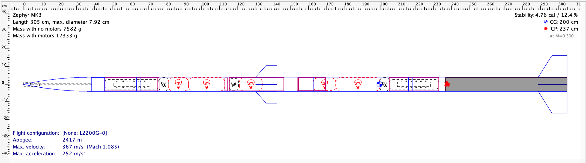
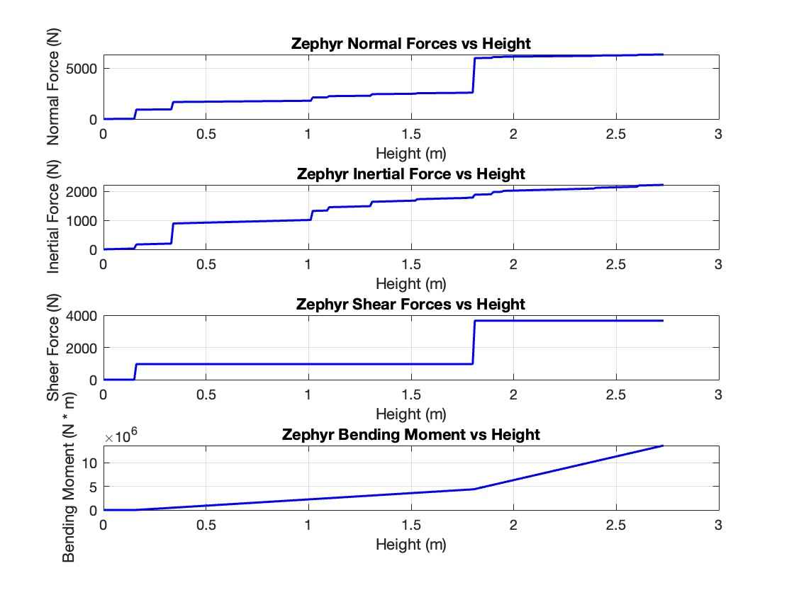
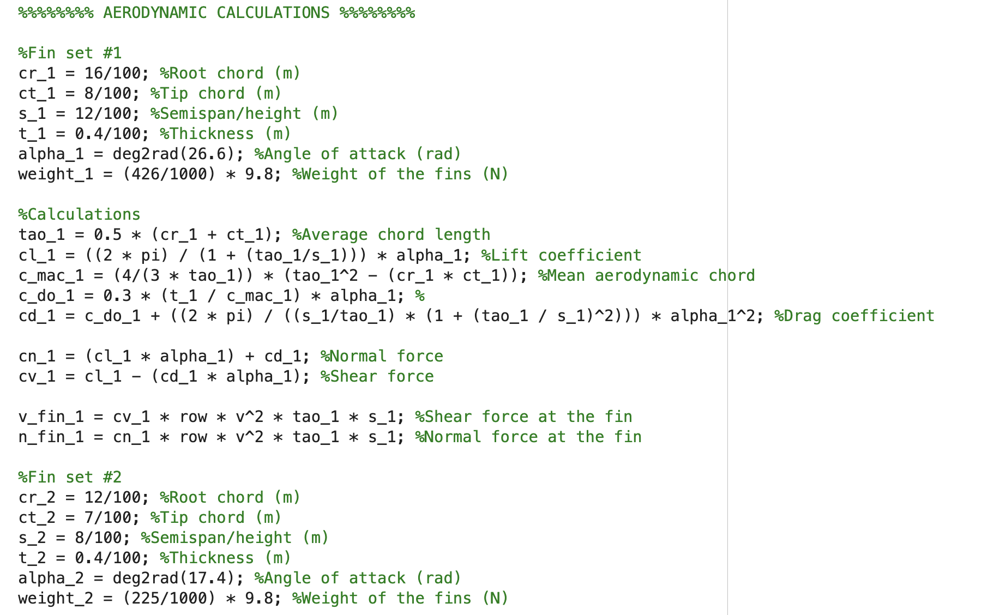
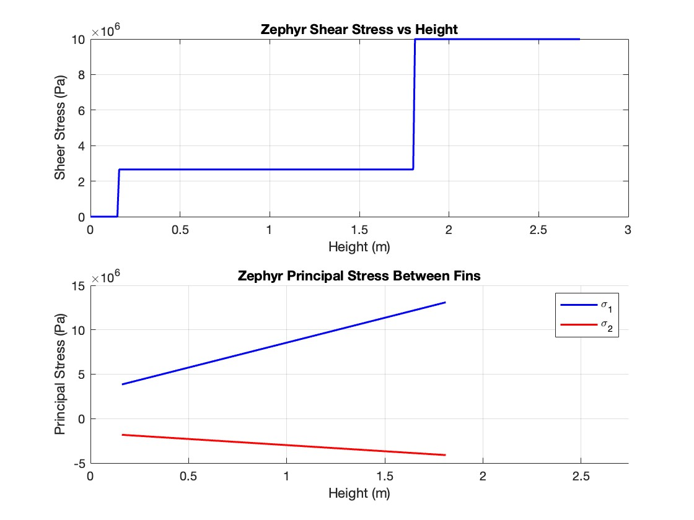
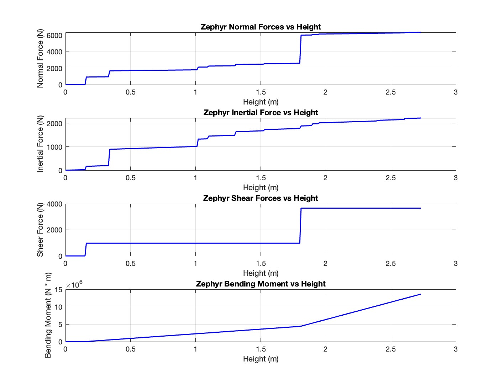
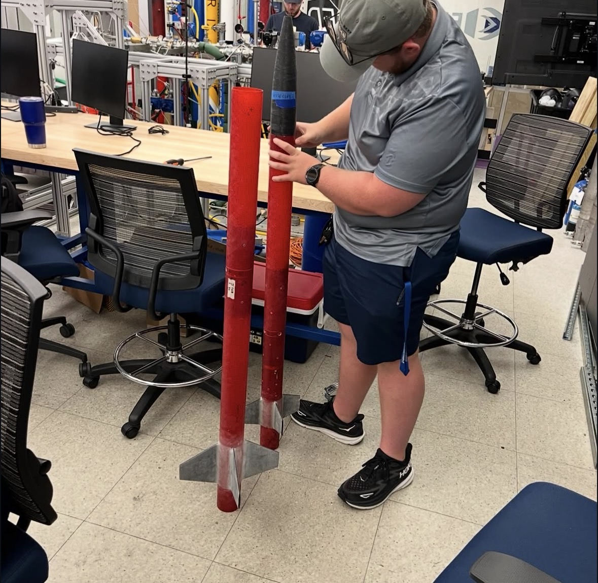

Project 02 / 03 · 2025 — 2026
Zephyr
sounding rocket.
A Mach 1.2 sounding rocket project where section analysis, finite-element work, and manufacturing decisions had to agree. I worked across structures, composites, and the tools used to evaluate them.

Make the loading story visible.
I modeled shear, normal, and von Mises stresses under combined aerodynamic, propulsion, and inertial loading. Sensitivity studies helped identify how the load path changed with the fin design and center-of-pressure shift.

Turn repetitive calculations into a design tool.
I built MATLAB section-analysis tools to evaluate the rocket under multiple load cases and reduce manual evaluation time by approximately 60%. The goal was not just speed: it was a clearer path from assumptions to a decision about the hardware.
reduction in manual evaluation time through MATLAB section-analysis tools



The design has to survive the shop floor.
The analysis informed a fin redesign and center-of-pressure shift, then connected to the physical work: CAD definition, CNC-machined bulkhead design, and composite fabrication.
